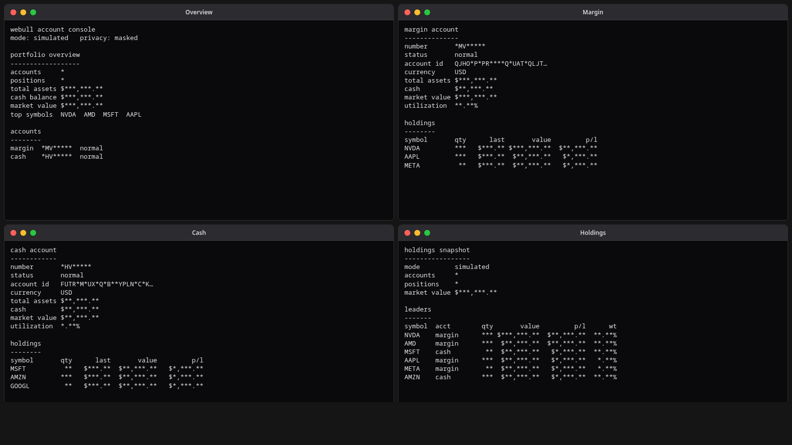
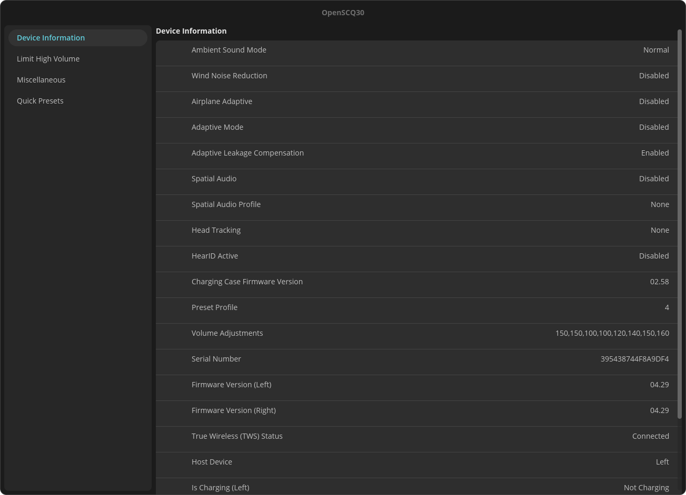

Your browser doesn't seem to have JavaScript enabled, so filtering cannot be provided.
AutoHandshake!
2026Ruby and JavaScript workflow automation suite for Handshake AI that reduced manual annotation and triage effort by 95% across 400+ contractor hours of proven runtime.
Selenium-based browser automation with injected monitoring hooks, multi-tab coordination, and automatic recovery from UI stalls for reliable long-running sessions across Windows, macOS, and Linux.
HTML parsing and context-aware quality-of-life tooling that gives workers fine-grained control while maintaining full auditability.
LinkedIn Learnt
2026Ruby CLI tool and pseudo-library that fetches LinkedIn Learning completed history and extracts course and learning path metadata into cacheable JSON aggregates.
Uses Selenium for browser automation with rate-limit tolerance and responsible throttling, supporting Chromium profile reuse and credential-based login.
Aggregates course details including duration, difficulty, ratings, CPE/PDU credits, and certification status with per-item JSON output.
Cassowary
2024Managed C# library for .NET runtime introspection, exposing CoreCLR internals as first-class types for reflection, allocation, and layout inspection without native code.
Selenium-SDK
fork 2026D library for browser automation over the WebDriver protocol, managing driver lifecycle, element interaction, and JavaScript execution without external language bindings.
Auto-detects and controls WebDriver executables for Chrome, Firefox, Edge, and Safari, with element search by CSS selector, XPath, tag name, or name, scoped globally or within an element.
Supports clicks, key input, form submission, text and attribute inspection, typed JavaScript return values, per-browser option classes, and full window management.
Insurgent CON — Insurgent: Client
2026Full-stack companion client for a real-time strategy game using Selenium Chrome integration, featuring authentication, live dashboards, and WebSocket data feeds.
Renders interfaces for 10,000+ tiles, 5,000+ units and buildings, and 8,000+ images in under a second.
Solo-developed client operating under Twin Harbor's ecosystem terms.
Insurgent CON — Insurgent: API
2026Core CON API for comprehensive static and real-time (match) data parsing.
Parses 10,000+ tiles, 5,000+ units and buildings, 2,000+ research trees, and more via WebSockets.
Backend for the Insurgent Client.
Insurgent CON — Insurgent: Image-Fetch
2026Tool to automatically collect images from CON spritesheets and CSS.
Handles 8,000+ images and organizes them for use in the Insurgent Client.
Conductor
2026D library providing HTTP, OAuth, serialization, and network orchestration utilities for API integrations without pulling in a large framework.
Wraps std.net.curl with JSON-aware request helpers, full OAuth 2.0 authorization with token caching and revocation, and a local loopback server for capturing OAuth redirects.
Includes reflection-driven JSON serialization and UDA-based struct-to-byte serialization, plus rate-limited request dispatch with reusable HTTP client state.
Chemica
2026GTK-based desktop application for exploring chemical compounds with interactive 3D molecular visualization, property tracking, and standard identifier lookup.
Automated dosage aggregation and similarity matching using structural scoring to identify analogous compounds and fill knowledge gaps.
Multi-source data pipelines from scientific and knowledge databases, with a local AI synthesis layer that resolves and merges overlapping content into unified entries.
Google-SDK
2026D library for Google APIs covering Drive, Docs, Sheets, and Gmail, with OAuth session and identity management and no heavy wrapper layers.
Drive support for authentication, folder and file browsing, byte-level read and write, and export of Google Workspace-native files; Gmail support for sending, reading, organizing, and labeling messages and threads.
Detects MIME types and exports Google Docs as plain text and Sheets as CSV, with typed exceptions for auth, permission, not-found, rate-limit, and protocol errors.
Intuit
2026D SDK for connecting to LLM and embedding models, with a focus on local models and an extensible, interface-driven design that makes adding new endpoints straightforward.
Text completions parsed directly into native D types, JSON-schema structured output, system/user/assistant context management, and real-time SSE streaming.
Embeddings with configurable precision and SIMD-accelerated math, plus native D functions exposed as model tools with automatic JSON schema generation.
Tern
2025High-performance D standard library extension providing compile-time vectorized algorithms, automated memory management primitives, and type introspection utilities.
Includes compile-time accessor generation, smart pointers (Unique, Scoped, RefCounted, Tracked), and serialization frameworks for JSON and flat formats.
Functional programming constructs with SIMD-optimized batch processing, custom allocators, timing-attack-resistant type wrappers, and variant type support.
Akashi
2026D library for chemistry-aware data retrieval, source resolution, and text parsing across public scientific and knowledge sources, including PubChem compounds, assays, proteins, and 3D conformers, Wikipedia, PsychonautWiki, Erowid, PubMed, and PubMed Central.
Parses wikitext, XML, articles, and medical and chemical texts into structured data, with sophisticated rate limiting and request batching for reliable large-scale access.
Designed to pair with the Intuit AI library for deterministic model connectors while remaining fully functional on its own.
Godwit
2026D -> C# interop library translating .NET runtime structures into D for direct cross-language interaction without marshalling overhead.
Maps C# reflection types to D equivalents including assembly loading, type allocation, boxing, casting, and method invocation through raw CLR structure access.
Multidasm
2026High-performance compile-time assembler in D targeting CIL, x86, x86_64, and MIPS with minimal overhead and maximal throughput.
Each backend exposes a fluent instruction API through a Block type with optional labels and a finalize() step that emits assembled machine code bytes.
AMD64 support spans MMX, SSE, AVX, and AVX2, with runtime assembling planned for the future.
Jitsort
2025JIT sorting algorithm in C that analyzes input arrays and emits customized x86_64 assembly into executable memory, returning a function pointer that produces the sorted result.
Uses array values as direct memory indexes for a novel approach to constant-time sorting with inline Make builds and no external dependencies.
Supports custom element-size callbacks for variable-length data with a minimal C API suitable for embedding.
Webull-SDK
2026D SDK for the Webull OpenAPI providing authenticated access to live market data, account management, and trading across securities.
Handles HMAC-SHA1 request signing, token lifecycle with MFA support, runtime permission detection, and switchable production, UAT, or local endpoints.
Exposes OHLCV bars, real-time snapshots, Level-2 order books, tick records, and footprint delta analysis, alongside typed account lists, balances, profiles, and positions.

Nimbus
2025Lightweight Linux CLI for unified display configuration controlling brightness, contrast, gamma, color temperature, and monitor-specific VCP features. Human-friendly command labels alongside raw hardware codes with auto-detection and intelligent backlight preference.
OpenSCQ30
fork 2026Cross-platform application for controlling Soundcore audio device settings across desktop and Android. Liberty 4 Pro configuration protocol, exposing EQ profiles, ANC modes, and firmware metadata through a unified interface.

Pipit
2026C terminal editor built from scratch in C using SIMD-accelerated hashmaps for batch processing, virtual buffers for minimal heap allocation, and rapidhash for backend efficiency.
Designed for ultra-low latency real-time editing on massive files with a familiar minimal command set similar to nano for accessibility across all platforms.
Mutagen
2026D Mutagen encoding library supporting FLAC, MP3, M4A, MP4, and AAC formats with a unified Track interface for read/write operations.
Includes catalog types for Album, Artist, and Image with format-specific parsers dispatching through a common core for multi-format applications.
Git-Around
2025Python automation tool for Git repository housekeeping with YAML-based per-repo configuration and systemd timer integration.
Supports auto-pull, auto-push, submodule updates, stale repo scanning, custom shell commands, wildcard path matching, and dry-run mode.
Sim-D
2024D SIMD vector library using static arrays and template metaprogramming to expose portable vector types across x86 and AArch64 targets.
Provides mask operations, vector arithmetic, and cross-platform abstractions for compiler-agnostic SIMD development without external dependencies.
VEXAPI
2024Reverse-engineered headers and documentation for the VEX Robotics V5 private API covering firmware jump tables, device drawing functions, and competition mode overrides.
Based on ARM64 disassembly of VEXos system_0.elf with structured signature recovery for display rendering, sensor reading, and motor control.
Documents apijump thunk functions, double-buffered graphics, and firmware offset tables enabling low-level robot programming beyond the official SDK.
Intel Intrinsics
fork 2024Contributions to the D language SIMD library enabling AVX-512 intrinsics, BMI2 operations, and AArch64 cross-compilation support.
Implements x86 Intel Intrinsics API compatibility across LDC, DMD, and GDC compilers with semantics-preserving code generation.
Targets full-speed Apple Silicon execution without code changes, following the simd-everywhere philosophy with optimal-instruction guarantees.
Depcat
2023Terraria mod using TModLoader that enables dynamic dependency injection of unmanaged code at runtime.
Swaypaper
2025Lightweight D wrapper for the SWWW wallpaper daemon managing slideshow backgrounds across multiple source directories.
Provides simple CLI controls for wallpaper rotation, daemon state management, and directory-based image collections.
SMBIOSReader
2022C# SMBIOS system information reader parsing firmware tables for hardware enumeration, BIOS details, processor info, and memory configuration.
Includes DSP interpreter support and interactive data browsing for system diagnostics, hardware auditing, and firmware analysis.
Exposes structured access to DMI types covering system, baseboard, chassis, processor, memory, and port information with cross-platform table parsing.
Nosferatu
2022C# HTML and JavaScript parser with an object-oriented DOM model and GDI-based rendering engine for lightweight document visualization.
Implements lexical analysis, token streaming, and visual layout computation enabling script interpretation and structured page rendering.
MihoyoEXP
2022Security research on CVE-2020-36603, a kernel driver vulnerability in Mihoyo's anti-cheat system, producing an academic reference for vulnerable driver communication patterns. Patched as of 2023.
UndeadInterop
2023Windows syscall research library in C# using manual export table walking and dynamic shellcode generation to invoke native APIs without static imports.
Includes hook detection for all hook variants both in both user-mode and kernel functions and syscall analysis.
Mobster
2025Terminal Python torrenting script supporting fuzzy search across multiple torrent providers with quality filtering.
GarbageCorruptor
2023Low-level CoreCLR research exploring unsafe string copying, dynamic array allocation and resizing, and garbage collection blocking mechanisms.
Rio
2023Assembly-like dynamic scripting language for C# targeting virtual code obfuscation and macro system integration.
Soundcore A3954 Dump
2026Reverse-engineered BLE state packets for the Soundcore Liberty 4 Pro and decoded raw protocol captures into structured definitions. Archived; served as the foundational reference for the OpenSCQ30 cross-platform tool.
Project Title
This is a description for a very real project that has information about it.